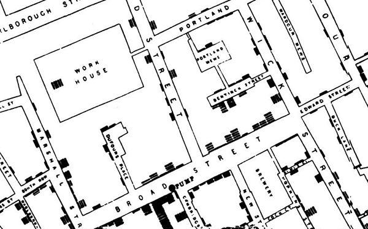
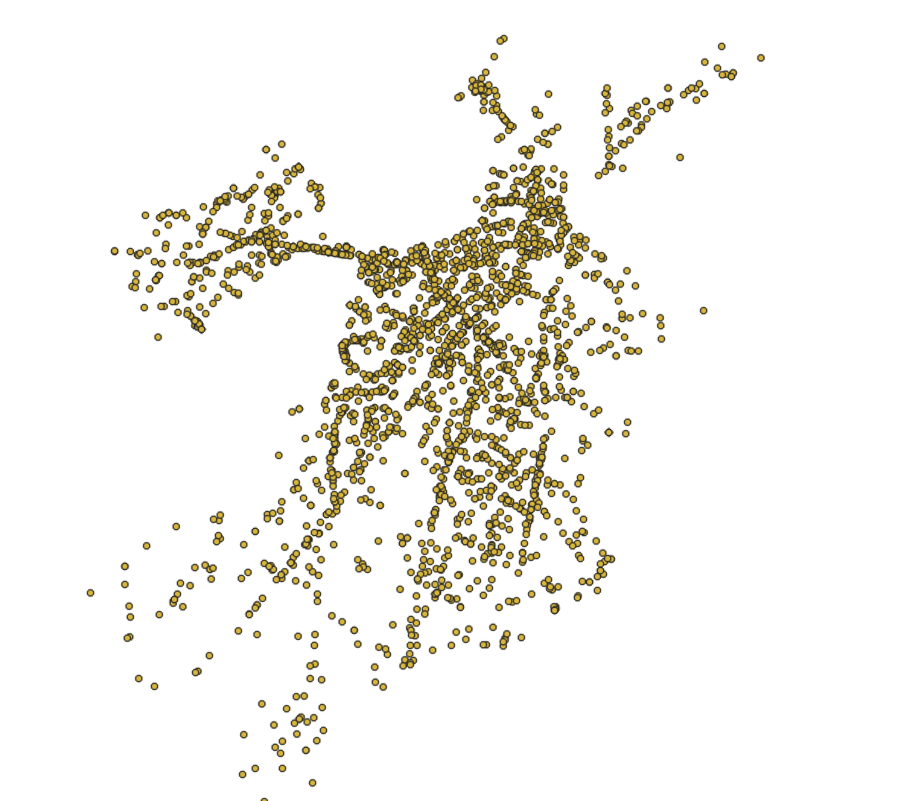
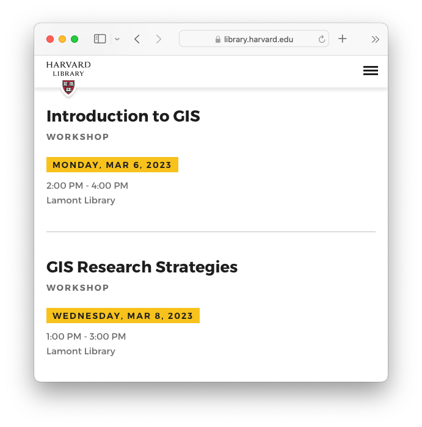

Spring 2023 Harvard Map Collection



 Analyze Boston
, Boston’s open data portal.
Analyze Boston
, Boston’s open data portal.
 Vision Zero dataset, open as a table.
Vision Zero dataset, open as a table.
 Bike crash data displayed visually as individual points in GIS software.

 GIS heatmap of density of restaurants in Boston.
GIS heatmap of density of restaurants in Boston.




Next Steps
- Email maps@harvard.edu
- Workshop signups on the library calendar
- GIS Office hours Tuesdays, 10-noon